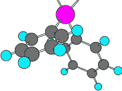

članci
| .:. | svg - revolucija 2D grafike | .:. | N|vu - web dizajn: novi pogled |
| .:. | JavaScript biblioteke | .:. | firefox - vatren i lukav |
| .:. | jQuery biblioteka | .:. | inkscape - svg editor |
svg - revolucija 2D vektorske grafike
Trenutno je na području računalnog prikaza dvodimenzionalne vektorske grafike puno stvari slabo definirano. Svi vektorski grafički alati koriste svoj interni format koje podržava mali broj preglednika, za razmjenu podataka među programima se korisnici moraju služiti raznim "trikovima" i kombinacijama. Očita je potreba za nekim univerzalno podržanim i fleksibilnim formatom koji bi većinu tih problema riješio.
SVG je kratica za eng. Scalable Vector Graphics.
 SVG se kao standard
razvija pod okriljem nekoliko velikih korporacija, i zamišljen
je kao otvoreni standard. Naravno, razvoj samog standarda nadzire
W3C konzorcij, najvažnije tijelo
za razvoj i standardizaciju raznih mrežnih tehnologija, što je
garancija da će SVG biti kompatibilan sa trenutnim tehnologijama
i podržan u raznim grafičkim alatima. Da ne bi bilo zabune, ne
radi se samo o grafici za prikaz web stranica, SVG je vrlo fleksibilni
standard sa ogromnim brojem potencijalnih primjena.
SVG se kao standard
razvija pod okriljem nekoliko velikih korporacija, i zamišljen
je kao otvoreni standard. Naravno, razvoj samog standarda nadzire
W3C konzorcij, najvažnije tijelo
za razvoj i standardizaciju raznih mrežnih tehnologija, što je
garancija da će SVG biti kompatibilan sa trenutnim tehnologijama
i podržan u raznim grafičkim alatima. Da ne bi bilo zabune, ne
radi se samo o grafici za prikaz web stranica, SVG je vrlo fleksibilni
standard sa ogromnim brojem potencijalnih primjena.
Trenutno je standard još u fazi razvoja i radi se na usavršavanju, iako je velika većina elemenata već poznata i definirana. Baza SVG-a je XML (eXtensible Markup Language), također otvoreni standard koji je vrlo fleksibilno koncipiran i koji je doživio veliki boom u zadnjih nekoliko godina. Najvažnija karakteristika SVG dokumenata je njihova skalabilnost - moguće ih je proizvoljno smanjivati ili povećavati bez gubitka kvalitete ili izobličenja. Prema standardima koji važe u XML-u, SVG dokument se sastoji od hijerarhijski posloženih recorda koji sadrže informacije o geometrijskim elementima ili tekstu od kojih se sastoji grafika.
Geometrijski elementi definirani u SVG standardu su vrlo pažljivo odabrani, tako da se očekuje da će pokriti široko područje primjena. Za definiranje jednostavnijih oblika bit će dovoljni elementi kao što su linije, pravokutnici, višekuti, krugovi i elipse, dok će se za kompleksnije oblike koristiti element curve (vektorski definiran kao Beziréova krivulja - vrlo dobro aproksimira razne parabole i ostale krivulje). Svim elementima će biti moguće definirati boju obruba i boju unutrašnjosti elementa (naravno, moguće je defninirati i gradijente boja ili ubaciti bitmap grafiku).
Osim geometrijskih elemenata posebna pažnja je posvećena tekstu kojeg će grafika sadržavati. Gledano kroz prizmu Flash-a to bi mogao biti dvosjekli mač, pa se uz razvoj ove mogućnosti daje i preporuka da se sadržaji koji su pretežito tekstualni ipak učine dostupnima u obliku HTML-a ili na neki drugi način predviđen za prikaz teksta. Znajući kako su web stranice izrađene u Flashu bile slabo čitljive, neintuitivne i imale izuzetno loš acessibility ova preporuka je odličan potez ljudi koji rade na standardu. Inače, tehnički gledano, nema nikakve prepreke da se sadržaj cijele web stranice prikaže kao SVG dokument: grafika i tekst podržani u SVG-u, bitmap (jpg, png, gif) slike se mogu uključiti kao dio dokumenta, prikaz možemo definirati pomoću CSS-a, XSLT-a ili unutar SVG-a. Takva stranica bi mogla biti i dinamički mijenjana, mogu se uključiti skripte jer je SVG kompatibilan sa DHTML-om (XHTML + CSS + JavaScript) i DOM-om.
flash killer
Gledano kroz prizmu web grafike, SVG je veliki konkurent vrlo popularnom (ali zbog nekih ograničenja ne baš svima omiljenom) formatu Flash. Predviđeno je da se razni parametri grafičkih elemenata u SVG dokumentu mogu dinamički mijenjati, tako da će SVG grafika biti interaktivna i moći će se skriptirati pomoću JavaScripta. Na renderiranje SVG-a će biti moguće utjecati u samom SVG-u, pomoću CSS-a ili XSLT-a, što garantira izuzetnu fleksibilnost i modularnost pri korištenju. Standard je kompatibilan sa DOM modelom strukturiranja dokumenata, tako da će biti moguće "izvana" upravljati većinom parametara. Sama budućnost formata Flash razvojem SVG-a i akvizicijom tvorca Flasha, tvrtke Macromedia, od strane grafičkog giganta Adobe-a postaje vrlo upitna.
U današnje vrijeme nezaobilazni scenarij korištenja SVG grafike
je i prikaz na uređajima sa malim ekranima i ograničene razlučivosti
(PDA računala, mobiteli, zasloni na modernim printerima). Zbog
toga su za takve uređaje koji imaju posebne zahtjeve propisana
dva dodatna profila:
.:. SVG Tiny (SVGT) - za uređaje ograničene radnim taktom procesora,
radnom memorijom, vrlo malom razlučivošću itd;
.:. SVG Basic (SVGB) - za uređaje koji imaju relativno dobre mogućnosti
procesiranja i renderiranja, a ipak imaju ograničenu razlučivost.
univerzalni format
Jedan od također važnih i vrlo naglašenih scenarija je korištenje SVG-a kao formata za razmjenu podataka između različitih aplikacija. Trenutno je među autorima software-a vrlo važan trend prilagodbe aplikacija na XML kao univerzalni format za razmjenu podataka. Pošto je zasnovan na XML-u, SVG je izrazito pogodan za takvo korištenje. Ogromna prednost mu je modularnost i kompatibilnost koja daleko nadmašuje bilo koji binarni format, a nezanemariva je i činjenica da je algoritme koji bi informacije eksportirali u XML format relativno lako brzo i kvalitetno implementirati u bilo koji grafički software.
Predviđa se da će SVG donijeti veliki napredak u pogledu razvoja i standardizacije raznih grana primjene računala, s obzirom na to da je zamišljen kao otvoreni i besplatni standard. Primjerice, već se najavljuje kako će donijeti revoluciju u prikazu kemijskih spojeva (atomi, molekule, kristalne strukture...). U vrijeme moćnih računala i istraživanja ljudskog genoma, DNA, biologije, genetike itd. lakša vizualizacija i razmjena rezultata će sigurno pomoći daljnjim otkrićima.
U svakom slučaju, SVG format ima veliku perspektivu i bit će zanimljivo pratiti njegov razvoj. Za sada se autori raznih vrsta softvera trude što kvalitetnije i brže implementirati SVG da bi prestigli konkurenciju. Adobe već radi na razvoju browserskog plug-ina koji bi prikazivao SVG u sklopu web stranica, i prvi dojmovi su vrlo dobri. Mozilla već razvija nativnu podršku za SVG u svojim preglednicima (bez potrebe za plug-inom), a na forumima se mogu naći i informacije kako se Adobeov plug-in za Internet Explorer može koristiti i za Mozilla Firefox. To će svakako ubrzati prihvaćanje SVG-a i u ostalim aplikacijama, tako da u bliskoj budućnosti (za nekoliko mjeseci) možemo očekivati onaj poslovični vrhunac popularnosti i boom SVG formata.